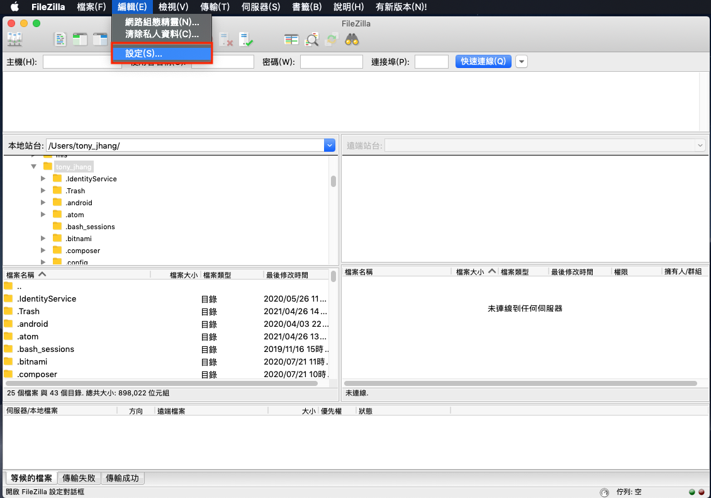
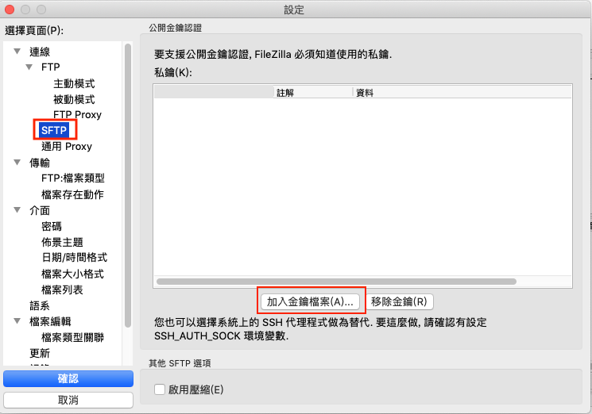
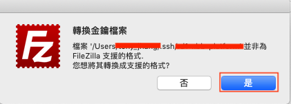
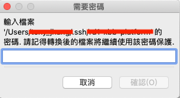
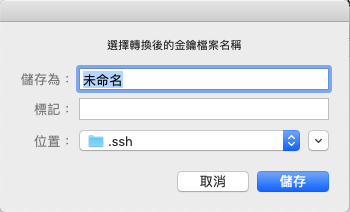

在 K8s 使用 FTP
前言
近期因公司內部的需求，需要在本機存取 K8s 內持久化儲存的檔案，原先想使用 NFS 架構來做掛載存取，但是因為這樣有點過於麻煩，後來才想使用 FTP 來實現，下面說明如何在 K8s 實現 FTP 功能，讓本機環境可以存取到持久化硬碟。
這邊實現的是 SFTP 使用 22 port 連線，存取認證方式可以是使用「金鑰」或是「帳號/密碼驗證」
這邊先簡單羅列步驟：
- 產生 ssh 認證使用的金鑰
- 編寫 Dockerfile
- 編寫 K8s YAML 檔案
- 暴露一個 External LoadBalace
- 使用 FileZilla 測試
環境是使用 GKE(Google Kubernetes Engine)
產生 ssh 金鑰
產生 ssh 金鑰是為了讓後續連線時，可以使用金鑰作為驗證，這邊是使用 Mac 的終端機產生，指令參照以下
1 | $ ssh-keygen -t rsa -b 4096 -f sftp_key |
Passphrase 設不設定都可以，如果有設定的話，最後以 FileZilla 測試時，private key 需要額外產生 .ppk 檔才能使用，後續會講解
完成後，在你目前位置的目錄上會出現一對金鑰，一個為 public key 另一個為 private key
一般來說，我們都會習慣把金鑰統一放置在本機家目錄底下的 .ssh 目錄內，如果自己有習慣的放置地方也可以放到自己習慣的位置
編寫 Dockerfile
我們需要將 public key 放進映像檔中，這樣在連線時才有辦法做金鑰驗證。 要實現這方式有兩個：
- 在 ftp 服務啟動時以 volume 方式掛載 public key 到相對位置
- 直接複製到映像檔內
這邊採用的是第二種方式，編寫 Dockerfile 並將 public key 放進去，我們要將 public key 放到使用者家目錄底下的 ./.ssh/keys 位置，所以我們需要建立相對應路徑，並將複製進去，可以參考以下
1 | FROM atmoz/sftp:alpine |
這邊使用的 base image 是 atmoz/sftp:alpine，當然你也可以選擇其他版本(eg. debian…)。
最後進行 docker build 的動作，並上傳到存放區
1 | $ docker build --no-cache -t custom-sftp:alpine -f Dockerfile . |
編寫 K8s YAML 檔案
因為我們要運行在 GKE 上面，需要編寫 YAML 以便運行與後續管理，這邊是使用 Deployment 的 Object，以下只截取部片重要片段，其餘部分需要自行補齊
1 | apiVersion: apps/v1 |
snippet 解析
1 | args: |
啟動參數的意義，這邊是 rd::::upload，這表示使用者帳號為rd，並且在家目錄底下建立一個 upload 的目錄(/home/rd/upload)，以便做存取，這樣我們就能夠將持久化硬碟掛載到 /home/rd/upload 路徑底下。
使用者帳號可以自訂，不一定要使用rd
可以看到 rd 的帳號並沒有設定密碼，在沒有設定密碼的情況下，表示認證會使用金鑰認證，那如果要使用密碼驗證可以這樣表示
1 | rd:12345:::upload |
這樣表示密碼為 12345
暴露一個 External LoadBalace
暴露外部 LB 這樣可以讓本機去存取到 GKE 內的服務，但是白名單記得要設定，以提高安全性
1 | apiVersion: v1 |
snippet 解析
1 | ... |
其中這段 port 有沒有要改成其他非預設 22 port 都可以，以安全性角度來說可以做個修改，例如 port: 14322。 這樣連線時就使用 14322 做連線，GKE 就會自動做 port 的 mapping。
使用 FileZilla 測試
最後我們可以下載 FileZilla Client 來測試，如果剛才編寫 Deployment 的 YAML 時，啟動參數有設定密碼的話，就可以直接填入相關資訊做連線測試了。
填入資訊
- 主機: 填入External LoadBalance 的 IP
- 使用者名稱: 填入啟動參數設定的使用者
- 密碼: 填入啟動參數設定的密碼
- 連接埠: 預設是22，如果剛剛在編寫 External LoadBalace 時，有修改 port，這邊記得要跟著變
如果是使用金鑰驗證，我們要先設定好 private key 的位置，開啟 FileZilla Client，依照下圖點選到設定位置
點選 編輯 > 設定

選擇 SFTP 並點選「加入金鑰檔案」，此時會請你選擇 private key 的位置

這邊要注意一下，如果一開始產生金鑰時有設定 passphrase，會跳出此視窗，主要是因為他需要將 .key 轉成 .ppk，這邊直接點「是」

輸入設定的 passphrase

選擇鑰儲存 .ppk 的位置與命名

最後再回到主畫面將連線資訊填入，密碼不用填寫，當連線後，會請你輸入 passphrase 的密碼